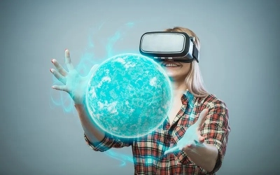
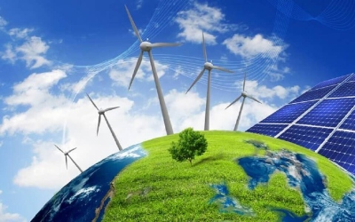
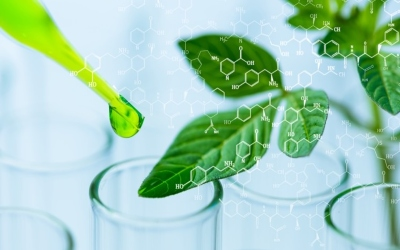

Innovacions
Les innovacions tecnològiques estan canviant la forma com vivim i interactuem amb el món. A continuació, trobaràs algunes de les innovacions més emocionants que estan definint el futur:
Realitat Augmentada i Virtual
La realitat augmentada i virtual ofereixen experiències immersives que estan transformant sectors com l'entreteniment, l'educació i la indústria dels videojocs.
Energies Renovables
Les energies renovables, com la solar i l'eòlica, estan jugant un paper clau en la lluita contra el canvi climàtic. Aquests sistemes sostenibles ofereixen una font d'energia neta i inesgotable per al futur.
Biotecnologia
La biotecnologia està revolucionant sectors com la medicina, l'agricultura i la producció d'aliments. Des de teràpies genètiques fins a cultius genèticament modificats, la biotecnologia està millorant la nostra qualitat de vida.
